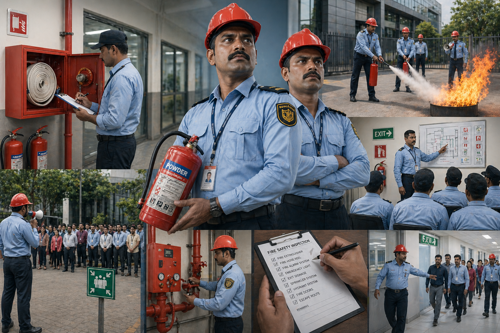
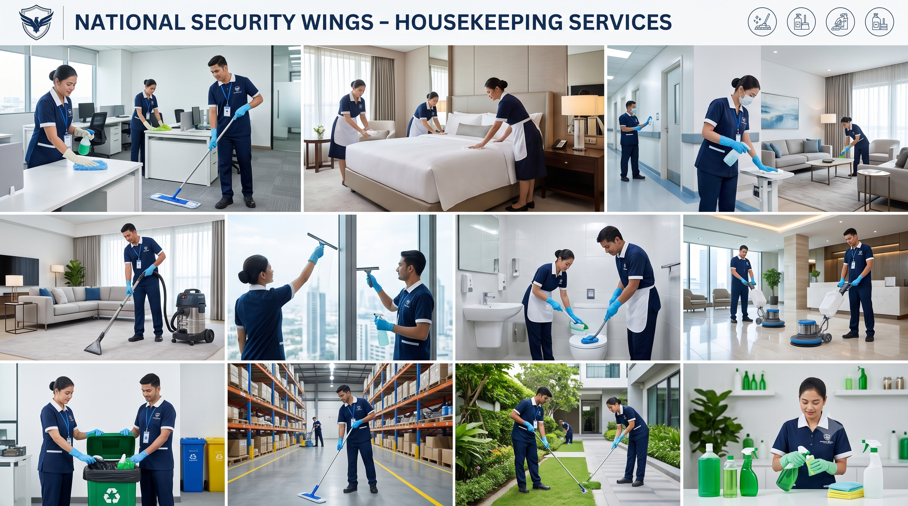
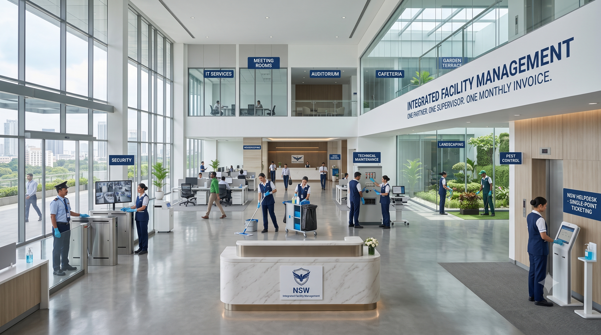

Seven core service lines — engineered, certified, and delivered under one roof. From a single guard at a residential gate to integrated facility command for industrial campuses.
The unarmed security guard remains the visible foundation of every premises' protection. At National Security Wing, we treat this role as the demanding profession it is — recruiting, training, and supervising guards to a standard that few agencies in Hubli can match.
Our guards are deployed across residential apartments, corporate parks, schools, retail outlets, hospitals, and industrial facilities throughout Karnataka. Each one is in uniform, equipped with a baton, whistle, torch, and rain gear, and supervised through a chain of command that includes shift supervisors, field officers, and an operations manager.
Residential societies, commercial complexes, hospitals, hotels, schools, retail showrooms, godowns, factories, government offices, and event venues — across Hubli, Dharwad, Belgaum, Gadag, Haveri, and the wider Karnataka region.
Request Guard Deployment
Fire incidents are rare. Fire fatalities are usually the result of a missing plan. NSW provides trained fire wardens and safety officers who serve as your first line of response — preventing incidents through inspection and discipline, and managing them through evacuation and coordination when they occur.
Our fire and safety personnel are trained in extinguisher operation, hose drill, evacuation route management, headcount procedures, and coordination with civil fire services. They also conduct quarterly mock drills, log inspection registers, and audit your installed safety equipment for serviceability.
Hospitals, hotels, malls, multiplexes, educational campuses, IT parks, manufacturing plants, warehouses, and any facility with statutory fire safety obligations under Karnataka Fire Force regulations.
Discuss Fire Safety PlanA clean facility is a respected facility. NSW housekeeping services bring corporate-grade cleanliness, hygiene, and presentation to your premises through trained, supervised, and equipped staff working to a documented daily, weekly, and monthly schedule.
From a corporate office's reception polish to a hospital's clinical sanitisation requirement, our housekeeping division operates with the same disciplined supervision and statutory compliance that defines our security work. We supply our own consumables, equipment, and chemicals — billed transparently and never substituted with inferior alternatives.
Corporate offices, hospitals and clinics, hotels, banquet halls, schools and colleges, retail outlets, banks, government offices, and residential complexes — across Hubballi, Dharwad, and adjoining districts.
Get Housekeeping Quote
When you need reliable, ESIC- and PF-compliant manpower at scale, NSW provides skilled, semi-skilled, and unskilled labour to support your operations — across logistics, hospitality, manufacturing, healthcare, and corporate functions.
Unlike unregulated labour suppliers, every NSW deployment is documented under the Contract Labour Act, registered for statutory benefits, and supervised by our coordinator team. Our clients pass labour-department audits and face no principal-employer surprises — because compliance is built into every assignment.
You receive verified personnel, lawful documentation, on-time payroll, and a single supervisor for every group. The financial and reputational risk of informal labour engagement is borne by us — not transferred to your books.
Discuss Manpower NeedsA poorly managed car park leaves a worse impression than a poorly designed lobby. NSW's parking management division brings order, courtesy, and accountability to vehicle entry, exit, and arrangement at malls, hospitals, hotels, banquet venues, and event spaces.
From manual ticketing to digital boom-barrier systems, from valet handover to lost-and-found tracking, we deliver a parking experience that respects your visitors and protects your premises. Our personnel are trained in courtesy protocols, vehicle handling, and emergency vehicle access discipline.
Shopping malls, multiplexes, large hospitals, premier hotels, banquet halls, marriage venues, exhibition centres, IT parks, and high-footfall corporate offices.
Plan Parking SolutionFor high-risk environments — cash transit, jewellery establishments, bank ATMs, fuel stations, and cash-rich industrial premises — NSW provides licensed armed security personnel with verified credentials, valid arms permits, and specialised training.
Every armed officer deployed by us holds a current arms licence, has cleared psychological assessment, and is trained in weapon handling, threat de-escalation, and lawful use of force. Our armed deployments are governed by additional layers of supervision, documented authority, and SOP-driven response protocols.
Bank cash-in-transit operations, ATM cash replenishment, jewellery showrooms, bullion movement, fuel stations, factories with high-value finished goods, and any premises where deterrent presence is part of your insurance or board-mandated risk plan.
Discuss Armed DeploymentWhen clients prefer a single accountable partner instead of three or four vendors, NSW offers integrated facility management — bringing security, housekeeping, technical maintenance, landscaping, and pest control under one contract, one supervisor, and one monthly invoice.
Integrated facility management eliminates the gaps between vendors that often allow incidents to fall through the cracks. With NSW, every operational dimension of your premises has a defined SLA, a named supervisor, and a documented escalation matrix — and you only pick up one phone to address any of them.
Corporate parks, IT facilities, hospitals, hotels, gated residential communities, large educational campuses, manufacturing units, and any premises whose management would rather focus on the core business than coordinate five vendors.
Plan Facility Contract
Common questions from prospective clients about how our services are scoped, priced, and delivered.
Standard mobilisation is 7 working days from contract signature, including police verification, uniform issue, and site induction. For urgent requirements, we offer 48-hour emergency deployment from our reserve roster — subject to availability and a brief field assessment.
Yes. National Security Wing operates under a current PSARA license issued by the Government of Karnataka. We renew it on time, every cycle, and a copy of the licence is available for inspection by any prospective client.
Every officer deployed by NSW is registered under ESIC and PF schemes from day one. Statutory deductions and contributions are deposited monthly, and challans are available to any client who requires them for their compliance audit.
Our control room maintains a reserve roster across the city. In the rare event of an absence, we deploy a replacement within 4 hours and document the substitution in the daily report. There is no premises-without-cover under an NSW contract.
Yes. We deploy licensed armed personnel for cash-in-transit, ATM replenishment, bullion movement, and high-risk premises. Each assignment is governed by a written SOP and coordinated with local police authorities where required.
Yes. While our headquarters is in Hubballi, we operate active sites across Karnataka — including Dharwad, Belgaum, Gadag, Haveri, Bagalkot, and Bengaluru. New geography deployments are evaluated based on supervisor coverage and reserve availability.